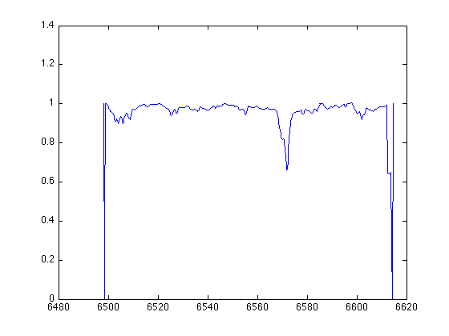
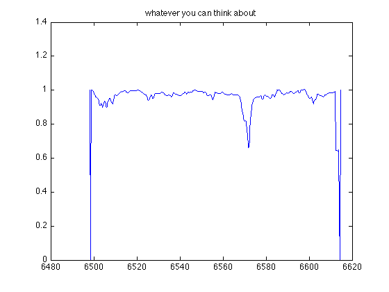
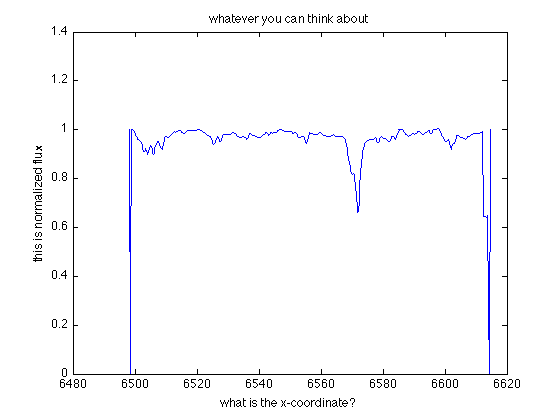

Plotting -- review
You probably have realized that the easiest way to load your .dat files is to use load:
load('binary1.dat');
Now you have a variable binary1
binary1
binary1 =
1.0e+03 *
6.4982 0.0010
6.4985 0
6.4987 0.0004
6.4989 0.0010
... ...
with it's first row the wavelength
binary1(:,1)
ans =
1.0e+03 *
6.4982
6.4985
6.4987
6.4989
... ...
and second row the normalized flux
binary1(:,2)
ans =
1.0000
0
0.3756
0.9992
... ...
Recall your knowledge about plot function, and plot wavelength vs. normalized flux:
plot(... ...)
You may want to add title to your plot:
title('whatever you can think about');
 Also, it's important to properly mark the axes so everyone can understand your figure. Simply use
xlabel('what is the x-coordinate?'); ylabel('this is normalized flux');